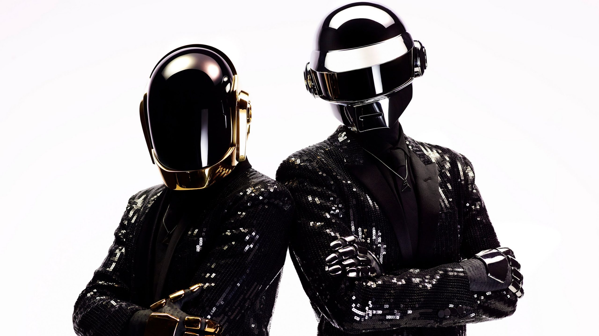

Listen to the Best of

Listen to the Best of
Daft Punk

Daft Punk
Daft Punk
Daft Punk, Julian Casablancas


Short-format releases from Daft Punk sit here, including one-off singles, alternate edits, soundtrack cuts, and special edition drops that expand the catalog without changing the main artist view.
This section groups together retrospective releases, collected edits, and catalog highlights that show how Daft Punk's sound evolved across eras, scenes, and collaborations.
Official merchandise updates can live here as clean editorial notes, keeping the layout consistent while spotlighting limited apparel, prints, and collectible drops.
As they evolved from '90s French house pioneers to 2000s dance tastemakers to mainstream heroes in the 2010s, Daft Punk remained one of dance music's most iconic acts. With their early singles and 1997's influential debut album Homework, Guy-Manuel de Homem-Christo and Thomas Bangalter quickly won acclaim for blending house, pop, funk, and hip-hop into futuristic forms.
Not content to just widen electronic music's popularity, 2001's Discovery reinvented the form and 2013's Random Access Memories created a polished pop future with a deeply human center.
Editorial features, playlist placements, and discovery paths can rotate here, giving extra context around where to start and what to hear next.